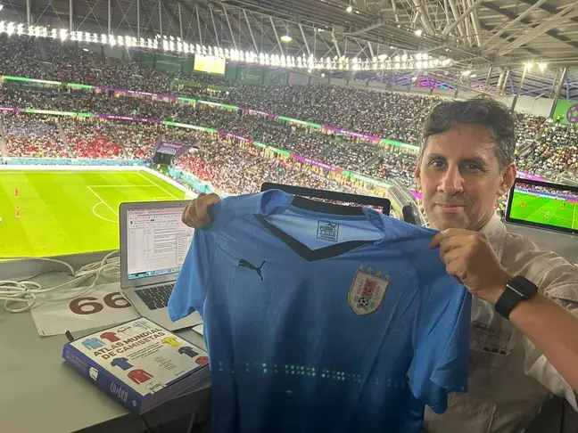
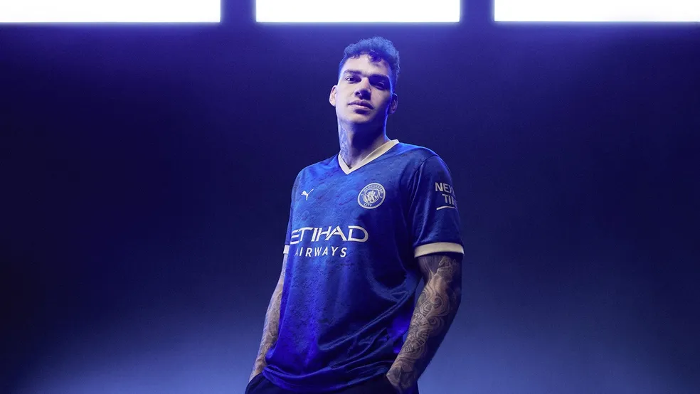
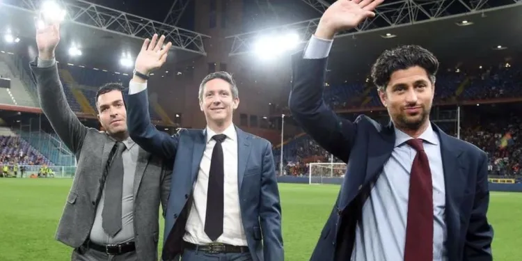
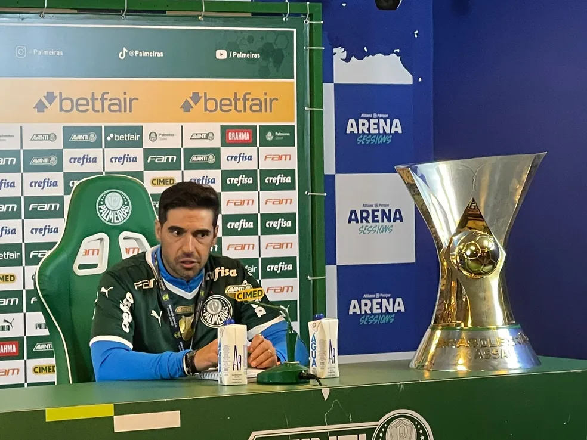
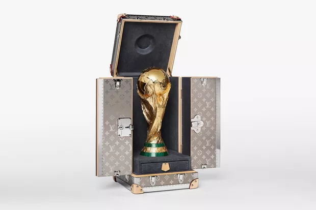

'Senhor das Camisas'
torcedor tem coleção com o manto dos 211 países filiados à FIFA.

Manchester City lança camisa comemorativa ao Ano Novo Chinês
Camisa traz coelho, símbolo deste ano no horóscopo chinês.

Três reforços nível Libertadores fazem torcida do Vasco “pensar grande” em 2023
Os jogadores que fizeram a torcida se animar.

Rejeição a técnico estrangeiro cai, mas ainda há preferência por brasileiro na Seleção
Presidente da CBF inicia busca no início de janeiro

Louis Vuitton e Copa do Mundo
Maleta da grife transportou taça da Copa do Catar; veja detalhes da peça.